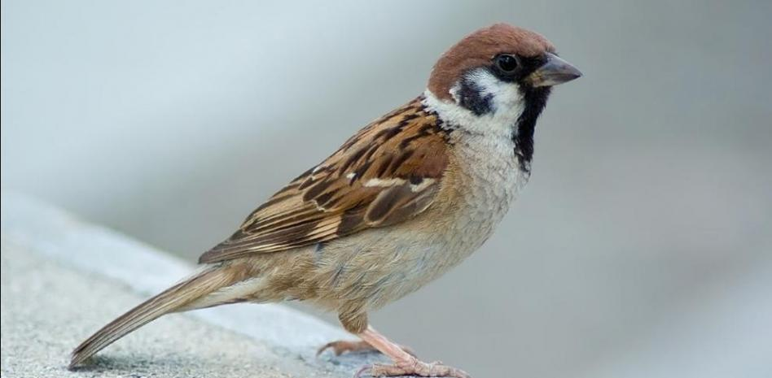

(Passer Domesticus)
El gorrión común (Passer domesticus), también llamado pardal, es una especie de ave paseriforme de la familia Passeridae. Está adaptado al hábitat urbano hasta el punto de ser el pájaro más frecuente y conocido en esas áreas, aunque en términos absolutos el pinzón es más abundante. Vive como comensal del ser humano. Es originario de Eurasia y el Norte de África, pero actualmente se encuentra distribuido en zonas urbanas por las zonas templadas de casi todo el mundo, pues ha sido introducido por el ser humano en el resto de los continentes, a excepción de la Antártida.
1. El gorrión es un ave pequeña, de 15 cm aproximadamente, aunque la hembra mide un poco menos. 2. El macho tiene un barbero negro, es decir, una vistosa mancha negra que abarca su garganta, cuello y la parte superior del pecho. 3.Una de sus características más resaltantes, es que no camina. Dando saltos se desplaza de un lado a otro. 4.Se adapta fácilmente a los distintos entornos, es resistente y se defiende con agresividad. 5. Es de contextura fuerte y de patas cortas, pero firmes. Es castaño con rayas negras por encima y blanco en la barriga. Ostenta en la cabeza unas manchas con distintos tonos de grises.